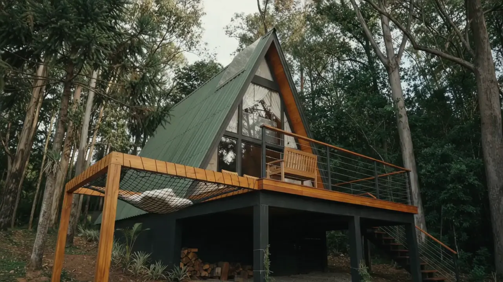
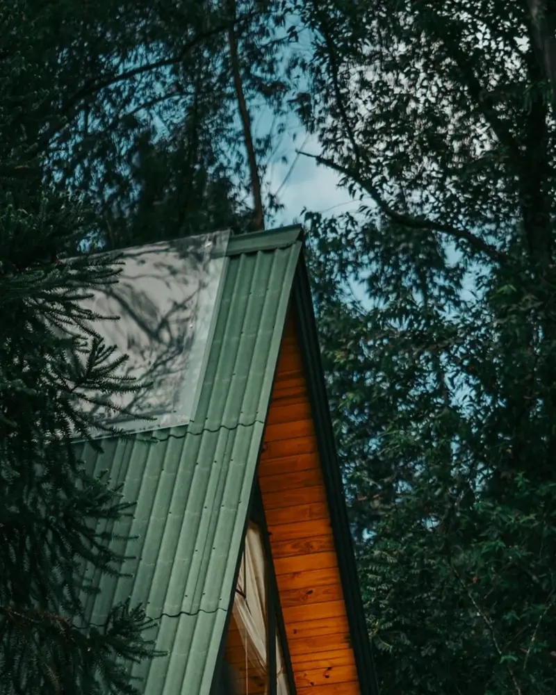
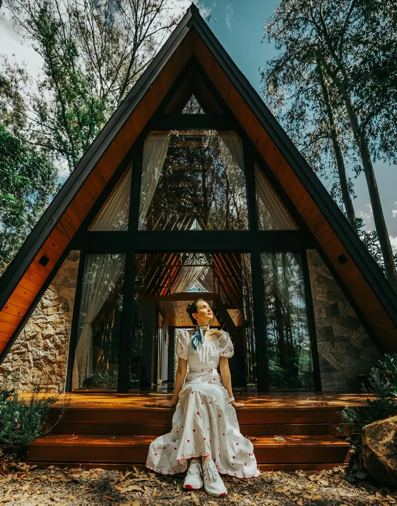
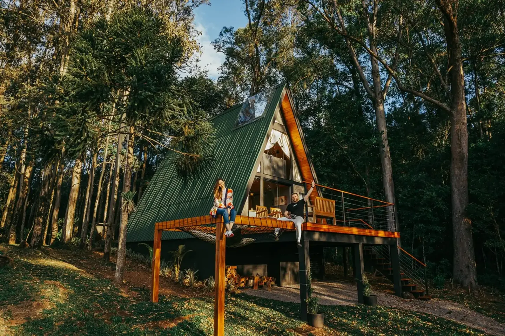
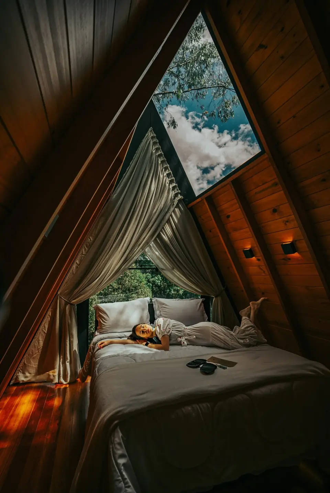

Entre a mata e a luz.
Cabanas em Encantado, RS. Conheça a Gariba e escolha onde ficar.
A Gariba
Antes de receber, uma escolha de vida.
A Gariba começou com uma mudança. Jeferson e Fernanda deixaram a cidade para viver na natureza e voltaram à terra onde nasceu o pai de Jeferson, no interior de Encantado. O casal participou da construção das cabanas e recebe quem chega. É esse cuidado que aparece nas avaliações dos hóspedes.
Escolha sua cabana
Estar entre as árvores
Cabana da Mata

A paisagem, bem perto.
A fachada de vidro se abre para os troncos altos ao redor. Lá dentro, uma claraboia acima da cama abre o teto para o céu.
- Hóspedes
- Até 4
- Estrutura
- 1 quarto, 2 camas, 1 banheiro
- Destaque
- Claraboia acima da cama
- Conforto
- Hidromassagem com cromoterapia, lareira, fire pit, cozinha equipada, ar-condicionado e enxoval
Você continuará no sistema de reservas da Gariba.

Abrir o olhar
Cabana Pôr do Sol
Um convite a olhar mais longe.
A cabana se ergue sobre um deck elevado, com a rede suspensa ao lado e a vista voltada para o pôr do sol. As árvores continuam por perto; o que muda é a direção do olhar.
- Hóspedes
- Até 4
- Estrutura
- 1 quarto, 2 camas, 1 banheiro
- Destaque
- Rede suspensa
- Conforto
- Hidromassagem com cromoterapia, lareira, fire pit, cozinha equipada, ar-condicionado e enxoval
Você continuará no sistema de reservas da Gariba.
Qual combina com a sua estadia?
As duas fichas lado a lado, com as mesmas perguntas.
- Atmosfera
- Cabana da MataFachada de vidro entre troncos altos, com a mata bem próxima.
- Cabana Pôr do SolDeck elevado, com vista voltada para o pôr do sol.
- Hóspedes
- Cabana da MataAté 4
- Cabana Pôr do SolAté 4
- Estrutura
- Cabana da Mata1 quarto, 2 camas, 1 banheiro
- Cabana Pôr do Sol1 quarto, 2 camas, 1 banheiro
- Destaque da ficha
- Cabana da MataClaraboia acima da cama
- Cabana Pôr do SolRede suspensa
- Nas duas
- Hidromassagem com cromoterapia, lareira, fire pit, cozinha equipada, ar-condicionado e enxoval.
Você continuará no sistema de reservas da Gariba.

Os gestos da estadia
No seu tempo.
-
A mesa
Cozinha equipada para preparar as refeições sem pressa.
-
O fogo
Lareira dentro da cabana e fire pit ao ar livre.
-
O descanso
Hidromassagem com cromoterapia, ar-condicionado e enxoval.
O que dizem os hóspedes
“Os anfitriões dão atenção a cada detalhe.”
Como chegar
Chegar à Gariba
Linha Garibaldi, 954 — InteriorEncantado, RS · CEP 95960-000
No interior de Encantado, na região do Cristo Protetor e da Lagoa da Garibaldi. É uma área rural: peça as orientações de chegada à Gariba antes de sair.
Antes de reservar
Qual é o horário de entrada e de saída?
Entrada a partir das 15h e saída até as 12h.
Quantas pessoas cada cabana recebe?
As duas cabanas são anunciadas para até 4 hóspedes, com 1 quarto, 2 camas e 1 banheiro. Para outra composição de grupo, fale com a Gariba antes de reservar.
Onde vejo valores, mínimo de noites e cancelamento?
No sistema de reservas da Gariba. Valores e condições aparecem de acordo com as datas escolhidas.
Café da manhã, pets e outras necessidades
Confirme diretamente com a Gariba antes de reservar, pelo WhatsApp (abre em nova aba) ou pelo e-mail cabanasgariba@hotmail.com.
Agora, escolha os dias.
Consulte disponibilidade, valores e condições no sistema de reservas da Gariba.
Ver disponibilidadeVocê continuará no sistema de reservas da Gariba, identificado como Espaço Gariba.
Conversar com a Gariba pelo WhatsApp (abre em nova aba)